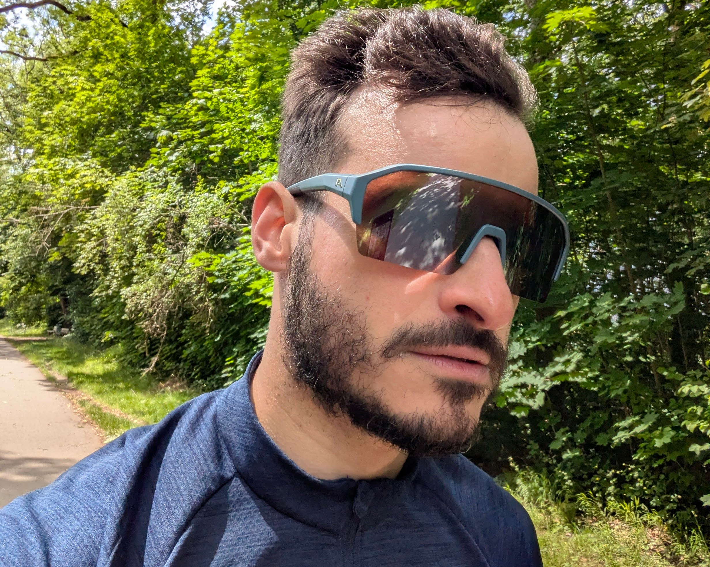

About me
Daniel T. Plop
I am a Senior Machine Learning Engineer. I build things at the intersection of machine learning and reinforcement learning systems, with a special interest in algorithms that learn online, in real-time, from a single stream of experience.
I believe that Reinforcement learning is, in the long term, the most promising path toward general goal-seeking agents that can interact with unknown environments, whether physical or virtual.
This includes its expanding role in the development of foundation LLMs, from post-training alignment to increasingly shaping pre-training and, consequently, becoming genuinely useful across a wide range of real-world applications. Yet, I believe RL's most profound contributions to AI will reach far beyond LLMs.
If you are interested in RL and its broader place in Artificial Intelligence, please don't hesitate to connect with me.